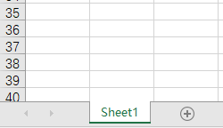
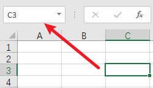

概念
Concepts
- 工作簿 Workbook
- 特指 Excel 文件
- 也称文档 Document 或文件 File
- 文件扩展名 .xlsx
- 工作表 Sheet
- 每个工作簿由多张工作表组成
- 每个工作表由行和列构成一个独立的二维数据区域
- 可以增加、切换、删除、移动、保护、隐藏或显示工作表
- 可以设置工作表的标签颜色
- 单元格 Cell
- 工作表的基本组成单元，是存储数据的最小单位
- 每个工作表都诺干单元格组成
- 用于存放各种数据，如文本、数字、日期、公式、图表等
- 地址 Address
- 每个单元格都有自己的地址；定位/选择某个单元格时，在名称框中显示
- 单元格由行和列标识/决定位置/地址
- 列：大写字母，A、B、C、D...
- 行：阿拉伯数字，1、2、3、4、...
- 根据地址引用单元格的内容时，要特别注意地址的变化
- 使用 F4 转换地址类别
- 连续按 F4，可以在行、列、行列之间循环切换
- 可以选择多个地址同时转换


| item | desc | demo |
|---|---|---|
| 相对地址 | 相对引用；地址的行、列随引用变化而不断变化 | A1：第A列第1行；列和行会变化 |
| 绝对地址 | 绝对引用；地址的行、列固定不变；使用 $ 固定 | $A$1：列和行都不变 |
| 混合地址 | 混合引用：地址的列固定或行固定，另外一个维度变化 | $A1：列不变；A$1：行不变 |
| 跨表引用 | 前面是表名，后面是单元格地址 | =sheet1!A1：sheet1的第A列第1行 |
也可以为某一块区域命名，便于引用
单元格 Cell
- 打开工作簿
- 调整行高
- 调整列宽
- 插入多个空白行：先选择若干行，再执行"插入"
- 调整列宽|行高
-
单独调整：双击 两列|两行连接线，根据当前列|行的内容自动调整同时调整：全选单元格区域，拖动 某列|行连接线，调整所有列|行宽度、高度一致
- 单元格样式
- 打开方式
- CTRL + 1
- 选择单元格→右键→设置单元格样式
- "单元格"组→格式→设置单元格样式
- 设置内容
-
数字
对齐
字体
边框
填充
保护
- 清除样式
- 日期和时间的底层存储机制导致的 —— 它们本质上是“数字”，只是通过“格式”显示为人类可读的形式
- 日期：从 1900年1月1日 开始的天数；整数
- 时间：小数，表示当前时间占一天的比例
12:00:00 → 0.5
23:59:59 → 0.999988426...
0:00:00 → 1

工作表 Sheet
- 概述
- 一个excel文件可以有多张工作表sheets；可以根据需要将业务内容相近的工作表放在不同的excel文件或同一个excel文件
- 可以同时操作多张表：按住Shift，点击其它工作表，然后操作某个工作表，如设置样式，则其它工作表也会生效
- 保护工作表
- 保护工作表：限制当前工作表的操作，如编辑，需要设置密码；请 牢记密码，谨慎操作
- 部分单元格取消锁定：如果仅仅指定部分区域允许操作，应先在"单元格格式"对话框"保护"选项卡中，取消"锁定"，再执行保护工作表
- 隐藏公式：同样需要执行单元格的"隐藏"操作再执行保护工作表操作
- 部分区域允许凭密编辑：没有密码，不允许编辑；可以设置多个区域；如信息收集表中，仅仅允许用户操作数据字段，文字等提示字段不允许操作
- 保护工作簿：也可以在"文件" → "信息" → "保护工作簿"，设置整个excel文件的访问